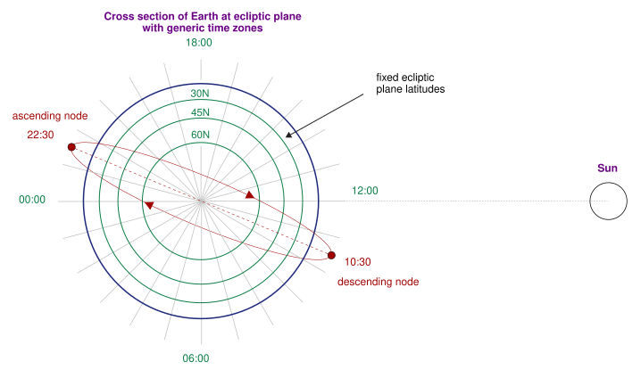

Executive Summary
Google is putting one satellite carrying its own AI accelerators into low Earth orbit on October 1, aboard SpaceX's Transporter-18 rideshare. The craft is about the size of a refrigerator, four TPUs sit inside it, and the solar panels put out about a kilowatt. One data center server lifted whole into the sky is close enough as a picture. This article looks at what that satellite does in orbit and what it sends back down.
The purpose Google wrote into its own post is not compute. The satellite is going up to gather orbital data on how its own TPUs stand up to the physical stress of spaceflight and to the radiation and temperature extremes of space. In practice the chips aboard run for about 15 minutes at a stretch and then shut down to cool. Where there is no air and heat can leave only by radiation, that is as far as the radiators carry it.
Sections 1 through 4 follow what Google and the reporting have set out. The question in section 5 is one this article raises. When the physical place a computation sits changes, what changes about the conditions on the data that feeds it?
Key Numbers
Sources: Google, Project Suncatcher: the facts (2026-09-24) · Duncan Riley, SiliconANGLE (2026-09-24).
Four
TPUs aboard the satellite
Google's own post gives no count. The number comes from the reporting, and it amounts to roughly one data center server's worth of compute
About 1 kW
What the solar panels put out
Enough to run a microwave. It marks the size of this prototype rather than any advantage of generating power in orbit
15 minutes
How long the chips run at a stretch
After that they switch off and dump heat. The cooling time has not been published
Eight times
The upside of solar power in orbit
Measured against the same panel on the ground at mid-latitude across a year. It is energy generated, not hours of operation
A Refrigerator-Sized Satellite With One Server Inside
The post Google published on September 24 says a short thing. The first prototype satellite of Project Suncatcher goes up next week. The vehicle is a Falcon 9, and it leaves Vandenberg tucked into SpaceX's Transporter-18 rideshare, the kind of flight that carries small satellites for many customers at once. The target is a dawn-dusk sun-synchronous orbit. That orbit follows the line between day and night around the Earth, so from the satellite's point of view the sun barely sets.

It helps to keep apart what Google stated itself and what the reporting filled in. The official post records that the mission was developed in partnership with Planet, and that "future designs of our satellites will each carry dozens of TPU chips while orbiting the Earth in clusters." The name of the satellite is not in that post, and neither is the number of chips flying this time. That the craft is about the size of a refrigerator, holds four TPUs and is called MVP came from reporting in the days before launch. Those four are described as roughly one data center server's worth of compute.
The power matches that size. The solar panels put out a little over a kilowatt. Set against the terrestrial AI data centers now discussed in gigawatts, that is a millionth of the scale. Plenty of headlines have announced a data center in space. What goes up this time is not a data center. It is one server.
Even so, this one server has something unusual about it. The chips aboard were not built specially for space. Semiconductors flown on satellites are normally designed differently from the ground up to tolerate radiation, and they pay for that by running several generations behind their terrestrial counterparts. The chips going up here are the same Trillium TPUs that Google Cloud customers use. Checking whether a part sold for ground data centers can be put into orbit as it is: the character of this mission lies closer to that.
Google states the purpose of the mission in one sentence. The satellite is "designed to gather in-orbit data on how our TPUs handle the physical stress of spaceflight and the radiation and thermal extremes of space." The same post also says that "this first launch is about seeing what works, identifying points of failure, and applying those findings to future missions." Nowhere in it is there a promise to prove compute performance.
On the schedule alone, Google is in a hurry. When Project Suncatcher was made public in November 2025, the next step named was a pair of prototype satellites to be launched with Planet, and that pair still sits on the calendar for 2027. The single craft leaving now is what came of not waiting for the pair and putting chips on a satellite that already existed.
Does Eight Times the Sunlight Mean Eight Times the Compute?
Google does not hide why this project started. Electricity. The sentence in the official post reads: "In low Earth orbit, satellites can access near-constant sunlight, generating up to eight times more solar power than on Earth."
Harvesting sunlight in orbit is not a new idea. The paper Google's researchers published in November 2025 traces the lineage back to a 1941 Isaac Asimov short story and cites the technical proposals that followed it. That lineage always stalled in the same place: getting the power generated up there back down to Earth. Google turned that around. Instead of sending the power down, send the computation up. Putting a data center in space came out of stepping around the problem that space-based solar power never solved.
The same paper sets out where the figure comes from. At 650 kilometers in a dawn-dusk sun-synchronous orbit, almost nothing of the sunlight is eaten by the atmosphere, and the orbit also escapes the day-and-night cycle below. Those two conditions are why a panel of the same area takes in far more energy up there than it would on the ground. The paper measures against a panel on Earth at mid-latitude, and the quantity compared is the total solar energy received over a year. A bonus comes attached. With no sunset there is no need to carry heavy batteries through the night. In space, where everything is bought by launch mass, shedding batteries is no small matter.
It still pays to read exactly what the number points at. Eight times is a quantity of electricity that can be made per unit of area. It is not a figure for how many hours that electricity can keep a chip running. Making a lot of power and spending all of it on computation are different problems, and what stands between them is heat.
Orbit does not hand out the power for free either. A ground plant pays in land and a grid connection; an orbital one pays in launch mass. Adding a square meter of solar panel means lifting a square meter on a rocket, and that mass is the base of the per-kilogram arithmetic further down. It is also why shedding batteries counts for so much. In orbit, mass is another name for cost.

More Time Cooling Than Computing
Travis Beals, senior director of Google's Paradigms of Intelligence research team, has described how this satellite will be operated, and the whole character of the mission is in that description. The chips will be able to run workloads only in short bursts of about 15 minutes, he said, before they have to be shut down to cool off. Inside those 15 minutes, he told the New York Times, the satellite can take a short query and have Gemini come back with an answer.
The thought that cooling must be easy because space is cold runs backwards. A vacuum has no air to carry heat away. Fans have nothing to push and coolant loops have nowhere to reject into, which leaves radiation. Heat out of the chip travels through thermal interface material and metal to a radiator panel, and that panel sheds it slowly into space as infrared. By Google's account this is done with a combination of heat pipes and radiators, an arrangement it has already run in a thermal vacuum chamber. Against a terrestrial data center that works twenty-four hours a day, a quarter of an hour lays out the distance between the two.
Heat is not the only thing being tested. The launch itself is the first gate. Over the ten minutes of the ride up, the spacecraft takes sustained loads of up to ten times the force of gravity, and individual TPU chips can see 50 to 100 g. Google says it completed vibration testing by shaking the satellite on all three axes to mimic the frequencies of a rocket launch. Radiation was prepared for separately. Trillium TPUs went into the proton beam at UC Davis's Crocker Nuclear Laboratory and ran AI workloads while the dose climbed. The first part to waver was the high bandwidth memory, and irregularities began at a cumulative 2 krad(Si). That is close to three times the 750 rad(Si) a shielded five-year mission is expected to receive. Pushed as far as 15 krad(Si), no permanent failure appeared. These values come from a beam facility on the ground, and the radiation environment in a real orbit is not that beam.
That the chips did not die is not on its own a reason to relax. What the paper examined more closely is the moment a single particle passes through and flips a value. The parts most sensitive to that were not the ones that led on cumulative dose: core logic and on-chip SRAM took that place. And the symptom was not a halt but silent data corruption. An AI workload produces a wrong result mid-run and no alarm goes off. The rate is about one event per 17 rad, and with the 150 rad(Si) a year the paper estimates for this shielded orbit, plus an assumption of one inference per second, that works out to roughly one in three million inferences. The paper reads that as likely acceptable for inference while saying the effect on training jobs needs further study. These figures come from the June 2026 revision, which redid the tests with a corrected method. In the first version, memory was named as the part most sensitive to this effect, and the estimated rate was one in ten million.
The three tests have one thing in common. All of them ask whether the hardware survives. None asks how fast it computes. And ground testing reaches only that far. Over fourteen or fifteen orbits a day, the temperature swings made by heat reflected off the Earth and by the shadow that comes and goes with the season, the thermal cycling that accumulates as the chips are switched on and off, the dose piling up across a year, the fall in radiator efficiency as the surface is eroded by ultraviolet and atomic oxygen: a chamber reproduces none of it. Those are the values a year in orbit accumulates. Not results of computation but a record of chips growing old.
Why that record matters so much becomes clear if you picture a failure. When a TPU dies in a terrestrial data center, a technician walks over and swaps it. The paper notes that this is impracticable in orbit, and the simplest remedy it can offer today is provisioning generous spares. How many extra boards to carry can only be settled by knowing when and in what way the chips start to go bad.
That heat is the real gate in this race can be read off where a competitor spends money. Starcloud, backed by Nvidia, got there first, launching a small satellite carrying a single H100 in November 2025, training a small language model in orbit and running Gemma, Google's open model, up there. And what the company advertises about its next satellite, due before the end of this year, is not a faster chip but a radiator. It will carry the largest deployable radiator ever flown on a commercial satellite and generate a hundred times the power of its predecessor. Anyone who wants to run chips in orbit for long ends up enlarging the surface that sheds heat first.
The most valuable number this mission can produce is also decided here. Any arithmetic about how far launch prices fall is half an answer without knowing how many hours a day the satellite actually spends computing. For the same craft, a duty cycle cut in half doubles the price of a unit of effective compute. So failure for this mission may not be the satellite dying. The more awkward outcome is a satellite that survives the year intact while its duty cycle comes in so low that running the same computation on a ground rack is cheaper by an order of magnitude.
What the 2027 Mission Tests Is Bandwidth
The next step shows what Google treats as the bottleneck. Two satellites go up in 2027, and what they test is not more compute. It is the optical links that carry data between satellites by light. Prove the communication between craft first, and add compute after.
The picture Google has drawn makes that order make sense. The example configuration in the research paper is a cluster of 81 satellites flying at 650 kilometers within a radius of one kilometer. The distance between neighbors oscillates between roughly 100 and 200 meters under the pull of Earth's gravity field. The reason for packing satellites this tightly is communication. Received power on an optical link falls off sharply with distance, so the craft have to be within arm's reach of each other to deliver bandwidth on the order of a data center hall.
The reason for a cluster is plain enough. Even with dozens of TPUs on each future satellite, running one large model means several craft have to move as a single body. What a terrestrial data center does by tying racks together with optical cable has to be done in orbit by satellites 100 meters apart traveling at 27,000 kilometers an hour.
The scale Google has set is specific. Splitting large machine learning workloads across satellites calls for links between them supporting tens of terabits per second, the research announcement says, while the paper's own text puts the aggregate bandwidth a single link must carry on the order of 10 Tbps. The paper states alongside it how far along the work has come. A bench-scale demonstrator using off-the-shelf components reached 800 Gbps in one direction, 1.6 Tbps both ways. Depending on which of the two targets you take, a factor of six to twenty remains, and Google's plan for closing it is dense wavelength division multiplexing together with spatial multiplexing. A fixed optical bench and two satellites flying in formation are separate stories. That is exactly the point the pair goes up to test in 2027. Eight times the sunlight counts for nothing if the link cannot carry the load, and the cluster stays a collection of separate servers.
The cost conditions are written into the same paper. Following the learning curve, the price of launching to low Earth orbit could fall below $200 per kilogram by the mid-2030s, and at that point launch cost amortized over spacecraft lifetime comes out roughly comparable, per kilowatt, to what a terrestrial data center spends on electricity. That is where Google's mid-2030s date for cost parity comes from.
Roughly comparable covers a fairly wide field. Taking a Starlink v2-class satellite as the model and dividing launch cost by lifetime gives $14,700 per kilowatt-year at today's prices, falling to $810 at $200 a kilogram. US data centers spend $570 to $3,000 per kilowatt-year on power. Widen the set to satellites of other designs and the same condition spreads to $810 to $7,500, the top of which is more than twice the most expensive terrestrial power. Holding a 20 percent learning rate comes with a condition of roughly 180 Starship launches a year, and the paper adds that falling well short of that target still leaves a price around $300 a kilogram.
The bandwidth story does not end with what the satellites pass between themselves. The results have to come down. This prototype uses radio, and the paper leaves optical ground links as a separate problem to be solved, held up by atmospheric turbulence and fast relative motion. The quickest figure on the public record is the 200 Gbps that NASA's TBIRD mission achieved between the ground and low Earth orbit in 2023.

Put together, two variables decide where a computation goes. Power makes orbit attractive, and bandwidth decides whether that attraction turns into actual computation. Heat sits beside them like a constant. Let any one of the three slip and the other two do not hold.
Why Pebblous Is Watching This Experiment
From here on this is our reading. Google launches satellites and we work with data. Yet the output of this mission is a familiar object to us. A year-long time series dataset. The vibration spectrum through the launch, cumulative ionizing dose, the frequency of memory bit flips, the radiator temperature curve drawn once every time the craft goes around. What Google will reason from when it designs the next satellite is those values, not the answers Gemini produced in orbit.
So this dataset comes with one demanding condition attached. The sample is a single craft. Values shift with the phase of solar activity, with how the launch vibration went on this particular rocket, with which batch the radiator coating came from. Unless those conditions are recorded alongside the values, setting them next to the 2027 satellite's measurements leaves no way to tell whether a difference came from a design improvement or from a quiet year on the sun. This is the place where, when we talk about AI-Ready Data, we ask about the conditions of collection before the volume of it.
Joining a ground test to an in-orbit measurement is the same kind of work. The proton beam at Crocker delivers a set species of particle, concentrated into a short span. The dose arriving over a year in orbit differs in species, in intensity and in distribution over time. To put the two side by side and say the ground test was right, what was measured up there and under what conditions has to survive next to the value. It has the same structure as the problem of taking a model trained on test-cell data and hanging it on a machine in the field for predictive maintenance. A laboratory gets its answer by controlling conditions; a field site gets its answer by recording them.
Carried over to the reader's side, the question turns into this. When the physical place your data is processed changes, what else changes? You do not have to go as far as orbit for this one, because it already belongs to practice. On-premises to cloud, one region to another, a central server to equipment on the floor: every time computation moves, three things move with it.
- Where the power comes from and how steadily it arrives. That settles how many hours a model can run in that place.
- The bandwidth and the latency of the path the data travels. Moving the computation is easy; moving the data is usually the more expensive half.
- The pattern of degradation and failure peculiar to that place. In orbit it is radiation; on a factory floor it is dust and vibration.
That Google did not hide the number 15 is worth noticing. It amounts to publishing the most honest weakness of its own experiment, and that number also points at where the next design has to be worked on. What data quality diagnosis does comes to the same thing in the end. Recording where something stops holding up is of more use to the next decision than confirming the stretch where it runs well.
Thank you for reading this far. The mission details and test results cited here can be checked in Google's own post, and the cluster configuration and launch cost arithmetic in the research announcement of November 2025. If computation has ever moved place in your organization, we would be glad to hear what changed on the data side when it did.
References
Official Sources
- 1.Beals, T. (2025, November 4). Exploring a space-based, scalable AI infrastructure system design. Google Research Blog.
- 2.Beals, T. (2026, September 24). Behind Project Suncatcher, our moonshot to put AI in space. The Keyword (blog.google).
Academic Paper
- 3.Agüera y Arcas, B., Beals, T., Biggs, M., Bloom, J. V., Fischbacher, T., Gromov, K., Köster, U., Pravahan, R., & Manyika, J. (2026, June 17, v2; original 2025, November 22). Towards a future space-based, highly scalable AI infrastructure system design. arXiv:2511.19468.
Industry & News
- 4.Wheatley, M. (2026, September 24). Google's first Project Suncatcher AI satellite set to blast off into orbit next week. SiliconANGLE.
- 5.Schauer, K. (2024, September 25). NASA's Record-Breaking Laser Demo Completes Mission. NASA.
- 6.Project Suncatcher: Google to launch TPUs into orbit with Planet Labs, envisions 1km arrays of 81-satellite compute clusters. (2026, September). Data Center Dynamics.
- 7.Google is sending its AI chips into orbit for the first time next week. (2026, September 24). Quartz.